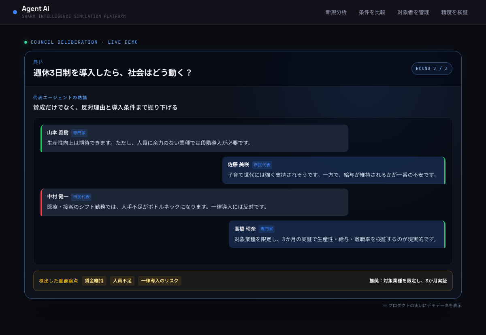

まだ起きていない反応を、
先に見る。
問いを入れる。1万人の社会が動き出す。
施策を出してから驚く
→
反応を見てから決める
INPUT
週休3日制を導入したら、社会はどう動く？
›
ACTUAL PRODUCT DEMO
SOCIETY PULSE
 反応が、誰から誰へ
反応が、誰から誰へ
広がるかまで可視化
実際の会話デモ

賛成だけでなく、反対理由と導入条件まで掘り下げる。 人員不足・賃金維持・一律導入のリスクを検出。
賛成
反対
条件付き賛成
何ができ、何を解決するか。
炎上・手戻り・社内の思い込みを、実行前に減らす。
01
見落とした反対理由
表面的な賛否ではなく、反発の根拠を早く深く発見。
02
刺さる層・離れる層
誰が支持し、誰が不安を持つかを社会全体で把握。
03
実行に必要な条件
Go / No-Goだけでなく、成功の前提と次の一手を言語化。
OUTPUT EXAMPLE
条件付き Go
週休3日制シミュレーション
最大の論点
人員不足・賃金維持
推奨アクション
対象業種を限定し、3か月実証
次に確認すること：生産性・離職率・サービス品質
問いから、判断と次のアクションまで。
新商品市場参入制度・政策
01 入力問い＋資料
→
02 シミュレーション社会反応を再現
→
03 熟議代表者が熟議
→
04 判断判断レポート